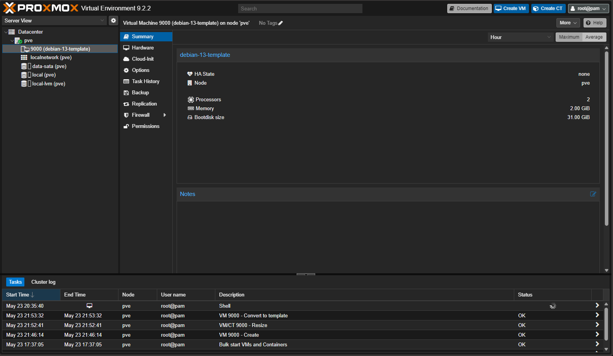
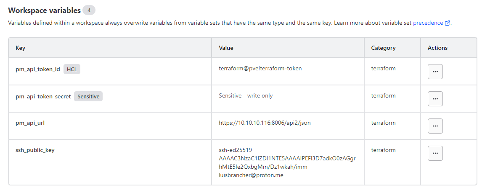
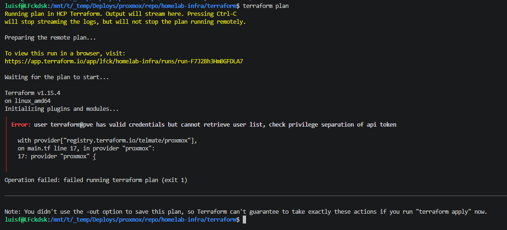
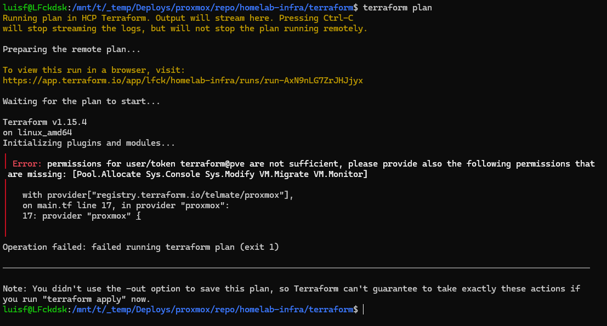
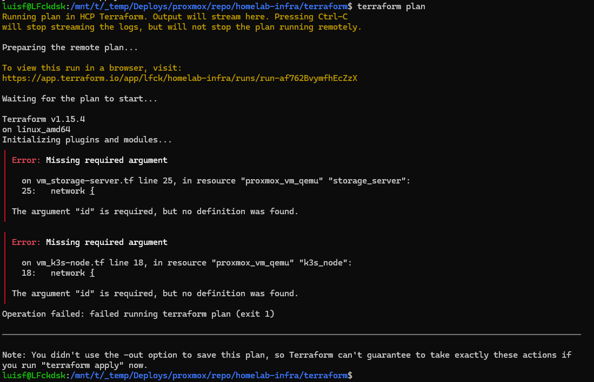
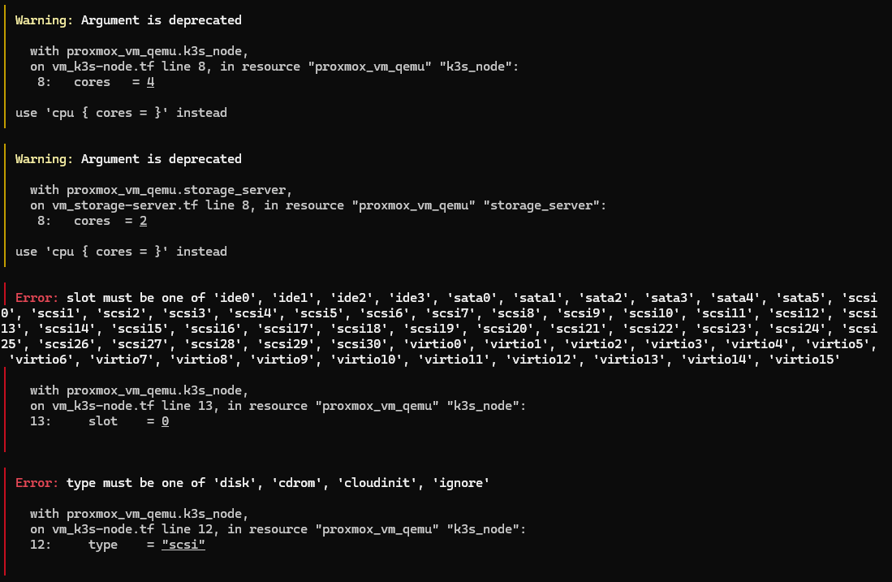
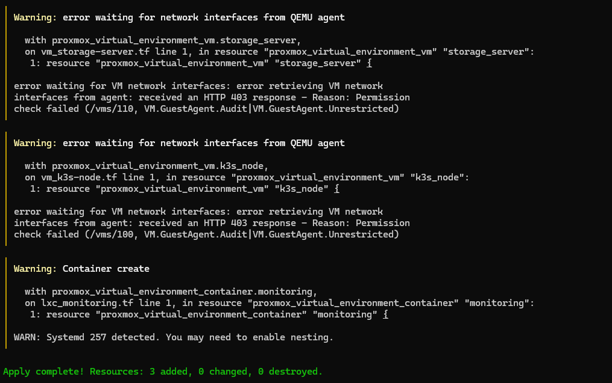
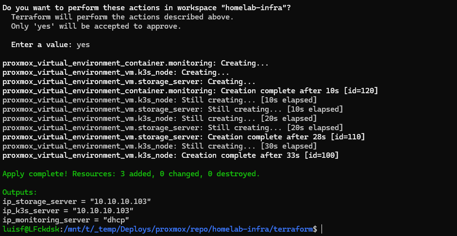

In previous articles I talked about the planning, the hardware, how I wrote the IaC code during the trip and the network configuration with OpnSense. This one is different: it's the first day getting hands-on with real hardware, running commands, seeing what breaks, and fixing it.
A contextual detail first: the hardware I planned to use was a fanless i5 1345U I had at home. Arriving from Brazil, the mini PC showed problems and I had to change the plan. I bought a Lenovo ThinkCentre to replace it, but while it doesn't arrive, I decided to deploy on the Ryzen 5800X that is still standing. The idea was to run everything on the temporary hardware, validate that the code works, debug what is needed, and when the Lenovo arrives, just repeat the process on clean hardware.
Two days later, I learned a lot of things that weren't in the plan.
# Day 01: Proxmox, storage, and preparing everything for Terraform
Installing Proxmox
Direct installation via ISO, nothing special here. Proxmox detected the disks and automatically configured LVM on the main NVMe. What I had to manually decide was what to do with the other disks.
My disk setup ended up like this:
- NVMe (465GB): Proxmox OS + VM disks via LVM (
local-lvm) - SATA SSD (931GB): persistent data for services
- 2x SATA HDDs (931GB each): backups, ignored for now, later they will go via USB on the final hardware
Configuring the SATA SSD storage
The SSD came with data from the previous ZimaOS. The first decision was to format it to start clean and avoid surprises.
I chose btrfs instead of ext4. Native snapshots per subvolume, transparent compression with zstd, and checksumming to detect silent corruption. For a disk that will store Immich photos and Nextcloud files, it makes a difference.
mkfs.btrfs -f -L data-sata /dev/sdc
mkdir -p /mnt/data
mount /dev/sdc /mnt/dataIn fstab using UUID so it doesn't depend on the device letter, which can change:
echo 'UUID=c0954474-c348-446e-90d7-dbd521e7070e /mnt/data btrfs defaults,compress=zstd,noatime 0 0' >> /etc/fstab
mount -o remount /mnt/data
systemctl daemon-reloadInstead of dumping everything in the root of the disk, I created separate subvolumes per service. Each subvolume can have its own snapshot policy in the future:
btrfs subvolume create /mnt/data/nextcloud
btrfs subvolume create /mnt/data/immich
btrfs subvolume create /mnt/data/upsnap
btrfs subvolume create /mnt/data/backupsThen I registered the disk in Proxmox so it appears as a storage option:
pvesm add dir data-sata --path /mnt/data --content images,rootdir,backupIn the end, three pools were available:
| Name | Type | Use |
|---|---|---|
local-lvm |
LVM-Thin (NVMe) | VM and LXC disks |
data-sata |
Directory (btrfs) | Persistent data |
local |
Directory | ISOs and templates |
Creating the Terraform user in Proxmox
Terraform needs access to the Proxmox API. A good practice is to create a dedicated user with only the permissions it needs, without using root. I did this via the UI to familiarize myself with Proxmox:
- Datacenter → Users → Add: user
terraform, realmProxmox VE authentication server. - Datacenter → Roles → Create: role
TerraformRolewith the necessary privileges. - Datacenter → Permissions → Add → User Permission: associated
TerraformRoletoterraform@pvewith path/and Propagate checked. - Datacenter → Permissions → API Tokens → Add: token ID
terraform-token, with Privilege Separation unchecked. This detail is important because with privsep active, the token is more restricted than the user even having the correct role.
The generated secret appears only once. I copied it to HCP Terraform.
Creating the VM template (Debian 13 cloud-init)
I went straight with Debian 13 Trixie, it's been stable since June 2025, no reason to use 12.
cd /tmp
wget https://cloud.debian.org/images/cloud/trixie/latest/debian-13-genericcloud-amd64.qcow2Here I had a forced 20-minute pause. The wget failed with Temporary failure in name resolution. OPNsense had no internet. I had moved it earlier and the cable was loose. Reconnected the cables, ping to 8.8.8.8 came back, wget worked. But it took me a while to realize the problem was just a loose cable.
With the image downloaded, the steps to create the template via CLI:
# creates base VM (ID 9000 is conventional for templates)
qm create 9000 --name "debian-13-template" --memory 2048 --cores 2 --net0 virtio,bridge=vmbr0
# imports disk to local-lvm
qm importdisk 9000 /tmp/debian-13-genericcloud-amd64.qcow2 local-lvm
# attaches the imported disk as boot disk
qm set 9000 --scsihw virtio-scsi-pci --scsi0 local-lvm:vm-9000-disk-0
# adds cloud-init drive, which injects user, SSH key, and network into cloned VMs
qm set 9000 --ide2 local-lvm:cloudinit
# configures boot order and serial, required for cloud-init to work
qm set 9000 --boot c --bootdisk scsi0
qm set 9000 --serial0 socket --vga serial0
# resizes the base disk to 31GB
qm resize 9000 scsi0 +28G
# converts to template
qm template 9000
LXC template
This one doesn't need to be created, just downloaded:
pveam update
pveam download local debian-13-standard_13.1-2_amd64.tar.zstConfiguring HCP Terraform
I created a homelab project and a homelab-infra workspace in HCP Terraform, with execution mode CLI-driven to run via terminal.
Four variables of type Terraform:
| Variable | Sensitive |
|---|---|
pm_api_token_id → terraform@pve!terraform-token |
❌ |
pm_api_token_secret → generated secret |
✅ |
pm_api_url → https://10.10.10.116:8006/api2/json |
❌ |
ssh_public_key → content of id_ed25519.pub |
❌ |
One mistake I made here: I accidentally marked pm_api_token_id as HCL. The ! in the value (terraform@pve!terraform-token) breaks the HCL parser. Unchecking it solves it.

Code tweaks before running
The code I wrote during the trip had a few things to tweak before running:
- Migrated auth from user/password to API token
- Added
cloud {}block pointing to the HCP workspace - Fixed VMIDs: template is 9000, VMs use 100, 110, 120
- Added explicit OS disk in each VM, the provider does not inherit from the template automatically
- Data disk for
storage-server: 800G indata-sata - Updated default
lxc_templateto Debian 13
The cloud runner problem
First terraform plan, first error:
dial tcp 10.10.10.116:8006: connect: network is unreachableHCP Terraform runs plans on HashiCorp's servers, which have no way to reach 10.10.10.116 on my local network.
The solution is the HCP Terraform Agent: a process that runs inside your network and pulls jobs from HCP via outbound connection, without needing to open any ports.
In HCP: Settings → Agents → Create agent pool → homelab-agent. Copy the token.
In the workspace: Settings → General → Execution Mode → Agent → homelab-agent.
I ran the agent via Docker on my PC:
docker run -d \
--name tfc-agent \
--restart unless-stopped \
-e TFC_AGENT_TOKEN="TOKEN_HERE" \
-e TFC_AGENT_NAME="homelab-agent" \
hashicorp/tfc-agent:latestWith the agent registered, the plan passed the connectivity error and started hitting the Proxmox API for real.
Debugging the plan
Error 1
user terraform@pve has valid credentials but cannot retrieve user list,
check privilege separation of api token
Sys.Audit was missing in TerraformRole:
pveum role modify TerraformRole -privs "Sys.Audit"Error 2
permissions for user/token terraform@pve are not sufficient,
missing: [VM.Monitor]
The telmate/proxmox 3.x provider still required VM.Monitor which Proxmox 9 no longer has. Researching, I saw that version 3.0.2-rc07 solves this and that the community was migrating en masse to bpg/proxmox. I decided to test rc07 first to call it a day.
Error 3
The argument "id" is required, but no definition was found.
The 3.x provider changed the syntax of the network block. I added id = 0.
Error 4
slot must be one of 'ide0', 'scsi0'...
type must be one of 'disk', 'cdrom', 'cloudinit', 'ignore'
More syntax changes in 3.x: slot = 0 became slot = "scsi0" and type = "scsi" became type = "disk". Fixed both.
Green plan. Apply worked. VMs came up in Proxmox.
The output did not return IPs because the telmate provider depends on the QEMU Guest Agent to read the IP, and the VMs cloned from the template didn't have it installed. This was supposed to be solved by Ansible, but without an IP, Ansible couldn't connect. Chicken and egg.
I decided not to waste time fixing this in the old provider; it was time to migrate to bpg/proxmox anyway.
# Day 02: migrating to bpg/proxmox and fixing the guest agent
Why change providers
After two consecutive compatibility errors with Proxmox 9 in telmate/proxmox, I researched and confirmed what I was seeing in GitHub issues: the community migrated to bpg/proxmox. It's actively maintained, has native support for Proxmox 9 without permission hacks, and the documentation is much more complete.
It was worth keeping telmate to practice troubleshooting, but there was no reason to stick with it.
I destroyed the VMs and started the migration.
Code changes
bpg/proxmox is a rewrite, not an update. Resource names, attributes, and blocks changed significantly.
main.tf: completely different auth syntax. The token becomes a single string in the format user@realm!tokenid=secret, and the provider needs an ssh block when using an API token:
provider "proxmox" {
endpoint = var.pm_api_url
api_token = "${var.pm_api_token_id}=${var.pm_api_token_secret}"
insecure = true
ssh {
agent = true
username = "root"
}
}The ssh block is necessary because some provider resources use SSH in addition to the REST API. With agent = true it uses the SSH agent key without needing a password. That's why I copied my id_ed25519.pub to Proxmox beforehand:
ssh-copy-id -i /mnt/c/Users/luisf/.ssh/id_ed25519.pub root@10.10.10.116VMs: proxmox_vm_qemu became proxmox_virtual_environment_vm. Practically everything changed:
resource "proxmox_virtual_environment_vm" "k3s_node" {
name = var.k3s_server
node_name = var.proxmox_node
vm_id = 100
clone {
vm_id = var.vm_template_id # number, not string
}
cpu {
cores = 4
type = "host"
}
memory {
dedicated = 8192
}
disk {
interface = "scsi0"
size = 50 # number, not "50G"
datastore_id = var.storage_pool
}
network_device {
bridge = var.network_bridge
model = "virtio"
}
initialization {
ip_config {
ipv4 {
address = "dhcp"
}
}
user_account {
keys = [var.ssh_public_key]
}
}
}LXC: proxmox_lxc became proxmox_virtual_environment_container:
resource "proxmox_virtual_environment_container" "monitoring" {
unprivileged = true
node_name = var.proxmox_node
vm_id = 120
initialization {
hostname = var.monitoring_server
ip_config {
ipv4 { address = "dhcp" }
}
user_account {
keys = [var.ssh_public_key]
}
}
operating_system {
template_file_id = var.lxc_template
type = "debian"
}
features {
nesting = true
}
...
}The unprivileged = true and nesting = true came from troubleshooting, more on that below.
variables.tf: I removed vm_template (string with name) and added vm_template_id (number). bpg/proxmox references the template by its numeric ID, not its name.
Apply and warnings
The plan ran clean with the new provider. The apply brought up the 3 VMs/LXC in less than 30 seconds, but with 3 warnings.

Warnings 1 and 2
Permission check failed (/vms/110, VM.GuestAgent.Audit|VM.GuestAgent.Unrestricted)bpg/proxmox tries to read the IP via guest agent right after creating the VMs. TerraformRole didn't have these permissions:
pveum role modify TerraformRole -privs "VM.GuestAgent.Audit VM.GuestAgent.Unrestricted"Warning 3
WARN: Systemd 257 detected. You may need to enable nesting.Debian 13 uses Systemd 257, which needs nesting enabled in LXC to manage services correctly. I tried adding features { nesting = true } in the code, but the apply failed:
Permission check failed (changing feature flags for privileged container
is only allowed for root@pam)A privileged container only accepts feature changes via root@pam, not via API token. The solution is an unprivileged container with unprivileged = true, which in addition to solving the permission issue is the recommended security practice for LXC.
The guest agent problem in the template
The apply was almost perfect, but the VM outputs returned 127.0.0.1 instead of the real IP. The provider was reading the first address from the guest agent, which is lo, not ens18. Simple fix in outputs.tf: ipv4_addresses[0][0] became ipv4_addresses[1][0].
But the root problem was another: the VMs only had visible IPs via guest agent because the template already came with it installed. In the previous apply, the VMs didn't have a guest agent and the IPs didn't show up anywhere. I needed to fix this in the template.
1. Convert the template back to a normal VM:
qm set 9000 --template 02. Clone to a temporary VM:
qm clone 9000 999 --name "debian-13-temp"
qm start 9993. The chicken-and-egg problem
The cloned VM from the cloud-init template has no configured password, it only accepts login via SSH key. But without a guest agent, there's no visible IP, and without an IP, you can't connect via SSH. No login, no package installation.
Solution: inject a password directly into the disk while the VM is stopped:
qm stop 999
apt install -y libguestfs-tools # no Proxmox host
virt-customize -a /dev/pve/vm-999-disk-0 --root-password password:yourpassword
qm start 9994. Configure network manually
Logged via console, the ens18 interface had no IP. Cloud-init ran without a network datasource so it didn't create the interface configuration file. I manually did what it would have done:
cat > /etc/systemd/network/10-ens18.network << 'EOF'
[Match]
Name=ens18
[Network]
DHCP=yes
EOF
systemctl restart systemd-networkdA few seconds later: 10.10.10.103 via DHCP.
5. Enable guest agent in Proxmox and install:
# on Proxmox host
qm set 999 --agent enabled=1
# inside the VM
apt update && apt install -y qemu-guest-agent
systemctl start qemu-guest-agent6. Clean up and convert to template:
# inside the VM
rm /etc/systemd/network/10-ens18.network
cloud-init clean
poweroff
# on Proxmox host
qm destroy 9000
qm clone 999 9000 --name "debian-13-template" --full
qm template 9000
qm destroy 999Final apply
With the correct template, the final apply worked without warnings:
proxmox_virtual_environment_container.monitoring: Creation complete after 10s [id=120]
proxmox_virtual_environment_vm.storage_server: Creation complete after 26s [id=110]
proxmox_virtual_environment_vm.k3s_node: Creation complete after 27s [id=100]
Apply complete! Resources: 3 added, 0 changed, 0 destroyed.
Outputs:
ip_k3s_server = "10.10.10.104"
ip_storage_server = "10.10.10.105"
ip_monitoring_server = "dhcp"
Three machines running, IPs visible, complete pipeline working.
💡 Takeaways
About providers: versions matter. telmate/proxmox worked but was stuck in compatibility with Proxmox 9. Migrating to bpg/proxmox was the right decision and the code became cleaner.
About cloud-init: the cloud-init template only configures the network if it has a datasource. Without the data that Proxmox injects via the cloud-init drive, it runs but does nothing on the network. Good to know when you need to access a manually cloned VM.
About RBAC: least privilege is simple in theory, but in practice, you discover what's missing as errors pop up. Sys.Audit, VM.GuestAgent.Audit, VM.GuestAgent.Unrestricted were in no tutorials, they all appeared in the log.
About HCP Terraform on a local network: the agent is the right path for on-prem infrastructure. One Docker container to set up and you have a runner inside your network without opening any ports.
The next step is Ansible: grab the IPs generated by Terraform, put them in the inventory, and run playbooks to configure each VM from scratch: k3s, NFS, Tailscale, Prometheus, Grafana, Loki.
The code is on homelab-infra.